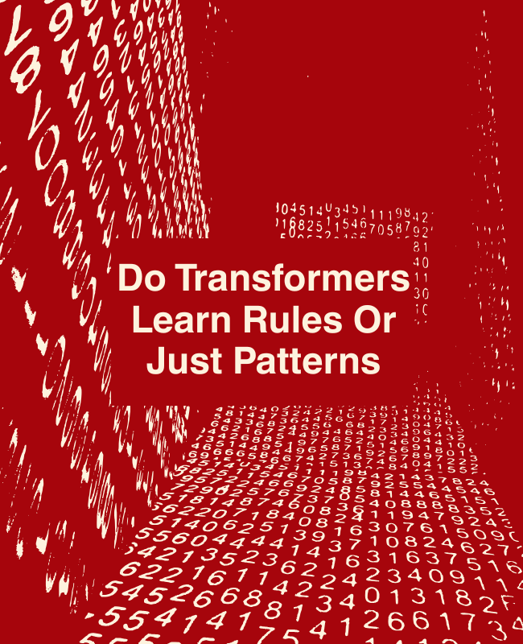
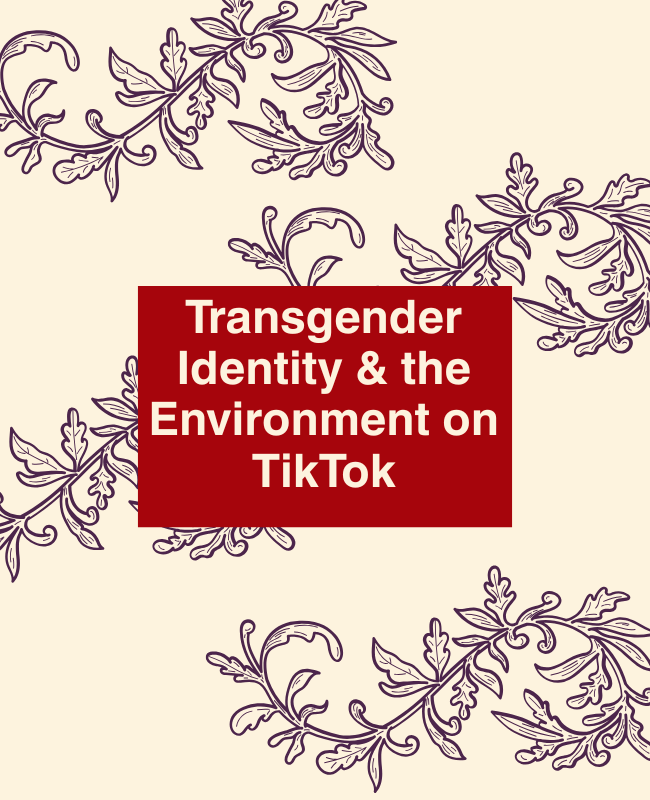

My research focuses on understanding how people interact with complex systems—whether through technology, identity, or environmental narratives.
I work across qualitative and technical methods to explore how information is distributed, interpreted, and experienced.

